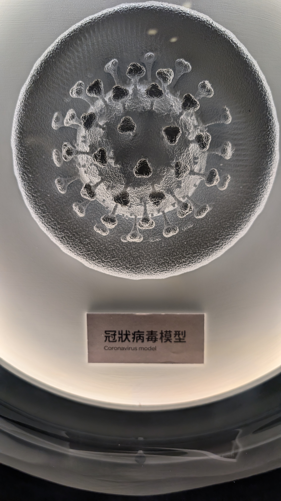
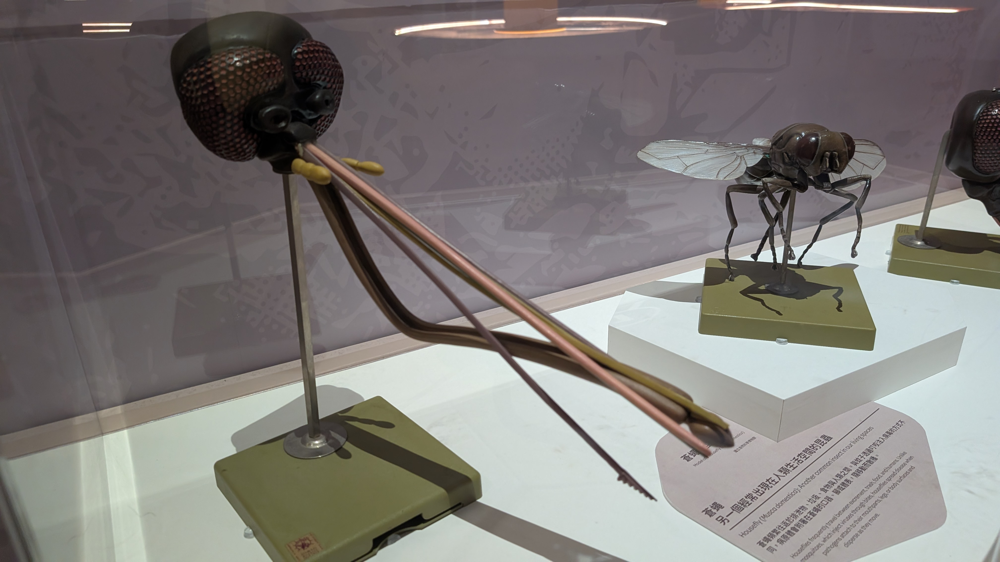

展覽如何讓人停下來？
從主視覺、標語、互動螢幕與展場動線，觀察展示如何吸引我們靠近。
NATIONAL MUSEUM OF NATURAL SCIENCE · FIELD NOTES
一次展場訪視，從顯微世界的細胞與微生物，到鳥類、蝙蝠與人類生活。我們用照片重新編排觀看的順序，讓「看見」變成可以提問、理解與分享的學習旅程。


THE CURATED STORY
本頁依照片中可辨識的展示內容、互動形式與生物尺度進行初步分類。分類是可調整的策展草稿，也可以直接作為學生分組探究的起點。
從主視覺、標語、互動螢幕與展場動線，觀察展示如何吸引我們靠近。
把細胞、微生物、昆蟲、鳥類與人類放在同一張「生命尺度地圖」中比較。
從防護用品、公共衛生到生物多樣性，找出展覽與日常選擇的關係。
PHOTO ATLAS
FOR CLASSROOM USE
不只留下「去過哪裡」：邀請學生選三張照片，寫出看見的證據、提出的問題，再用一張圖把它們連起來。
圈出照片裡最想放大的地方，說明它為什麼重要。
問題要能透過展場文字、觀察或查證得到答案。
把兩張看似無關的照片，用一個概念連起來。
TAKEAWAY
這份成果頁可以持續加入學生筆記、語音導覽、QR Code 或課堂作品，逐步長成可公開分享的學習檔案。